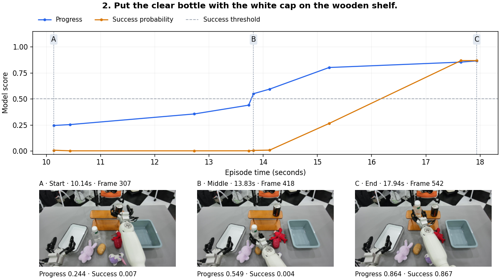
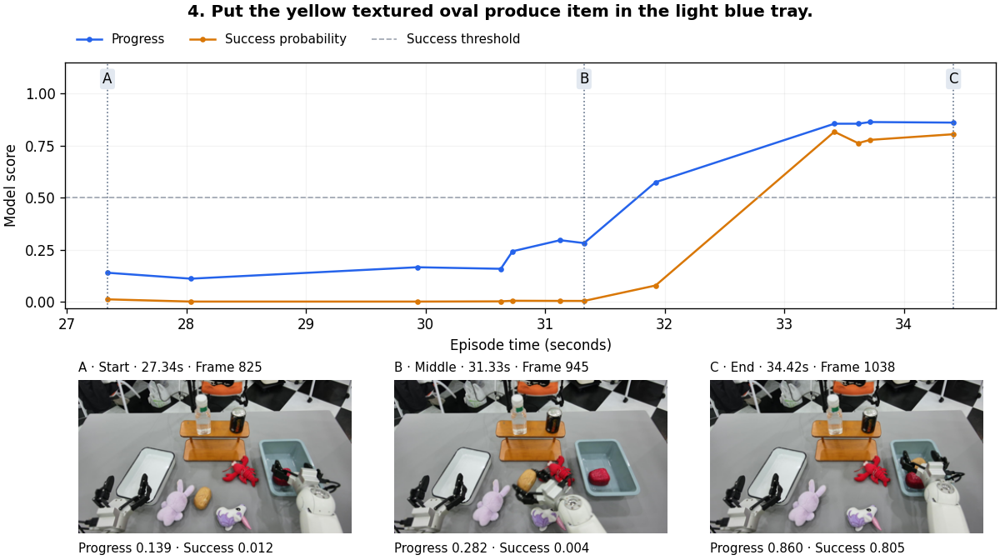
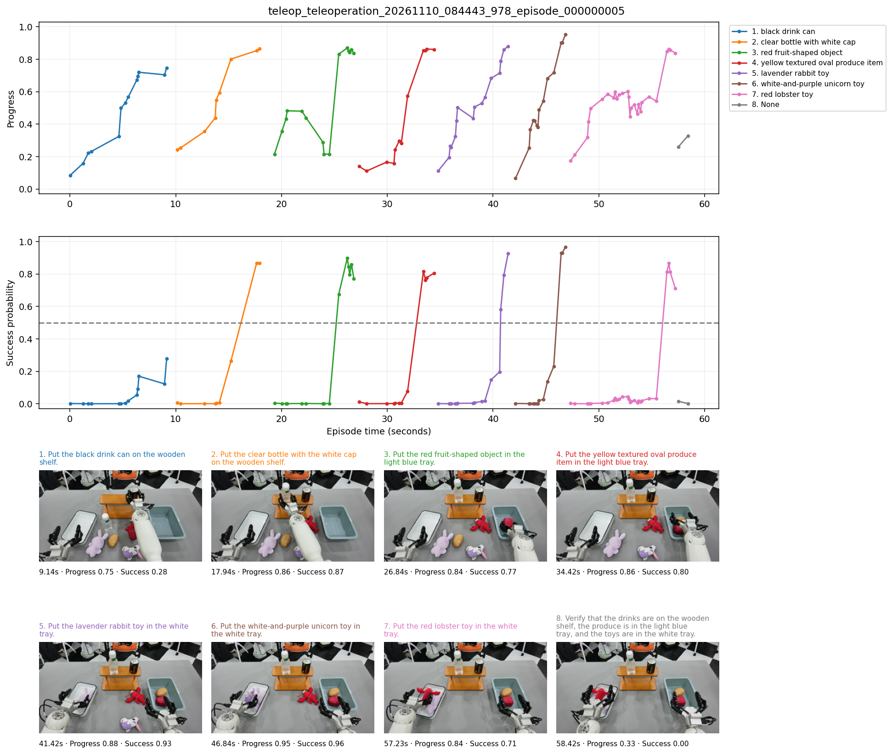

1. Put the black drink can on the wooden shelf.

Evaluated 108 selected head-camera frames across 8 instruction segments, spanning 0.01–58.42 seconds of episode time. 15 frames carry source annotation review flags. The model assigned success probability above 0.5 to 22 frames.
The 0.5 threshold is the example script’s decision threshold. Frame counts above this threshold describe model outputs. Ground-truth success rates and accuracy require human labels.
Each panel shows one instruction segment. Lettered markers on the plot match the selected head-camera images below it; the lines include every scored frame in that segment.





Start and end scores refer to the first and last selected frame carrying that instruction. These boundaries come from next-subtask annotations. They may omit the previous action’s final release or verification frame. Each score uses up to eight frames available by that point within its instruction segment.
| Instruction | Time range / frames | Progress start → end | Success at end / peak | Frames above 0.5 | Review flags |
|---|---|---|---|---|---|
| Put the black drink can on the wooden shelf. | 0.01–9.14s 13 frames | 0.084 → 0.748 | 0.279 / 0.279 | 0/13 | 1 |
| Put the clear bottle with the white cap on the wooden shelf. | 10.14–17.94s 9 frames | 0.244 → 0.864 | 0.867 / 0.867 | 2/9 | 2 |
| Put the red fruit-shaped object in the light blue tray. | 19.34–26.84s 15 frames | 0.215 → 0.837 | 0.770 / 0.898 | 6/15 | 2 |
| Put the yellow textured oval produce item in the light blue tray. | 27.34–34.42s 12 frames | 0.139 → 0.860 | 0.805 / 0.816 | 4/12 | 2 |
| Put the lavender rabbit toy in the white tray. | 34.81–41.42s 16 frames | 0.112 → 0.880 | 0.926 / 0.926 | 3/16 | 2 |
| Put the white-and-purple unicorn toy in the white tray. | 42.12–46.84s 14 frames | 0.066 → 0.952 | 0.965 / 0.965 | 3/14 | 2 |
| Put the red lobster toy in the white tray. | 47.33–57.23s 27 frames | 0.174 → 0.838 | 0.711 / 0.867 | 4/27 | 2 |
| Verify that the drinks are on the wooden shelf, the produce is in the light blue tray, and the toys are in the white tray. | 57.53–58.42s 2 frames | 0.261 → 0.328 | 0.001 / 0.015 | 0/2 | 2 |
These notes were supplied with the selected frames. They have not been independently relabeled for this evaluation.
Raw head stream /home/jiahe/system012/data/teleop_teleoperation_20261110_084443_978/episode_000000005/observation.images.cam_head.parquet. Every selected JPEG was verified against the raw frame’s timestamp and SHA-256. The inference input uses RGB images with the short side resized to 240 pixels before Qwen processing.
The gallery lists the original selected frames and their exact instructions. Changing the selected history can change a prediction. Instruction transitions reset the context, so progress values across different segments describe different tasks.
Frame and context manifest · All frame scores · All subtask summaries

| Frame / time | Head camera | Instruction and review notes | Progress / success |
|---|---|---|---|
| 2 0.01s |  | Put the black drink can on the wooden shelf. | 0.084 / 0.002 |
| 39 1.24s |  | Put the black drink can on the wooden shelf. | 0.158 / 0.001 |
| 54 1.74s |  | Put the black drink can on the wooden shelf. | 0.222 / 0.000 |
| 63 2.04s |  | Put the black drink can on the wooden shelf. | 0.232 / 0.000 |
| 141 4.63s |  | Put the black drink can on the wooden shelf. | 0.324 / 0.001 |
| 147 4.83s |  | Put the black drink can on the wooden shelf. | 0.499 / 0.002 |
| 159 5.23s |  | Put the black drink can on the wooden shelf. | 0.530 / 0.003 |
| 168 5.53s |  | Put the black drink can on the wooden shelf. | 0.568 / 0.019 |
| 192 6.32s |  | Put the black drink can on the wooden shelf. | 0.673 / 0.054 |
| 195 6.42s |  | Put the black drink can on the wooden shelf. | 0.695 / 0.091 |
| 198 6.52s |  | Put the black drink can on the wooden shelf. | 0.720 / 0.170 |
| 271 8.94s |  | Put the black drink can on the wooden shelf. | 0.704 / 0.123 |
| 277 9.14s |  | Put the black drink can on the wooden shelf. Task boundary: confirm release and next target in the original head/wrist images. | 0.748 / 0.279 |
| 307 10.14s |  | Put the clear bottle with the white cap on the wooden shelf. Task boundary: confirm release and next target in the original head/wrist images. | 0.244 / 0.007 |
| 316 10.44s |  | Put the clear bottle with the white cap on the wooden shelf. | 0.253 / 0.001 |
| 385 12.73s |  | Put the clear bottle with the white cap on the wooden shelf. | 0.355 / 0.001 |
| 415 13.74s |  | Put the clear bottle with the white cap on the wooden shelf. | 0.439 / 0.001 |
| 418 13.83s |  | Put the clear bottle with the white cap on the wooden shelf. | 0.549 / 0.004 |
| 427 14.12s |  | Put the clear bottle with the white cap on the wooden shelf. | 0.594 / 0.008 |
| 460 15.22s |  | Put the clear bottle with the white cap on the wooden shelf. | 0.801 / 0.264 |
| 533 17.65s |  | Put the clear bottle with the white cap on the wooden shelf. | 0.853 / 0.867 |
| 542 17.94s |  | Put the clear bottle with the white cap on the wooden shelf. Task boundary: confirm release and next target in the original head/wrist images. | 0.864 / 0.867 |
| 584 19.34s |  | Put the red fruit-shaped object in the light blue tray. Task boundary: confirm release and next target in the original head/wrist images. | 0.215 / 0.005 |
| 605 20.03s |  | Put the red fruit-shaped object in the light blue tray. | 0.355 / 0.001 |
| 616 20.42s |  | Put the red fruit-shaped object in the light blue tray. | 0.432 / 0.001 |
| 620 20.53s |  | Put the red fruit-shaped object in the light blue tray. | 0.482 / 0.001 |
| 662 21.94s |  | Put the red fruit-shaped object in the light blue tray. | 0.480 / 0.002 |
| 674 22.33s |  | Put the red fruit-shaped object in the light blue tray. | 0.439 / 0.002 |
| 722 23.92s |  | Put the red fruit-shaped object in the light blue tray. | 0.288 / 0.001 |
| 725 24.02s |  | Put the red fruit-shaped object in the light blue tray. | 0.215 / 0.002 |
| 740 24.52s |  | Put the red fruit-shaped object in the light blue tray. | 0.215 / 0.001 |
| 767 25.41s |  | Put the red fruit-shaped object in the light blue tray. | 0.832 / 0.676 |
| 791 26.22s |  | Put the red fruit-shaped object in the light blue tray. | 0.870 / 0.898 |
| 795 26.34s |  | Put the red fruit-shaped object in the light blue tray. | 0.851 / 0.844 |
| 798 26.44s |  | Put the red fruit-shaped object in the light blue tray. | 0.844 / 0.797 |
| 803 26.62s |  | Put the red fruit-shaped object in the light blue tray. | 0.859 / 0.859 |
| 810 26.84s |  | Put the red fruit-shaped object in the light blue tray. Task boundary: confirm release and next target in the original head/wrist images. | 0.837 / 0.770 |
| 825 27.34s |  | Put the yellow textured oval produce item in the light blue tray. Task boundary: confirm release and next target in the original head/wrist images. | 0.139 / 0.012 |
| 846 28.04s |  | Put the yellow textured oval produce item in the light blue tray. | 0.111 / 0.001 |
| 903 29.93s |  | Put the yellow textured oval produce item in the light blue tray. | 0.166 / 0.001 |
| 924 30.63s |  | Put the yellow textured oval produce item in the light blue tray. | 0.158 / 0.002 |
| 927 30.73s |  | Put the yellow textured oval produce item in the light blue tray. | 0.242 / 0.005 |
| 939 31.13s |  | Put the yellow textured oval produce item in the light blue tray. | 0.296 / 0.004 |
| 945 31.33s |  | Put the yellow textured oval produce item in the light blue tray. | 0.282 / 0.004 |
| 963 31.92s |  | Put the yellow textured oval produce item in the light blue tray. | 0.574 / 0.078 |
| 1008 33.42s |  | Put the yellow textured oval produce item in the light blue tray. | 0.855 / 0.816 |
| 1014 33.62s |  | Put the yellow textured oval produce item in the light blue tray. | 0.855 / 0.762 |
| 1017 33.72s |  | Put the yellow textured oval produce item in the light blue tray. | 0.863 / 0.777 |
| 1038 34.42s |  | Put the yellow textured oval produce item in the light blue tray. Task boundary: confirm release and next target in the original head/wrist images. | 0.860 / 0.805 |
| 1050 34.81s |  | Put the lavender rabbit toy in the white tray. Task boundary: confirm release and next target in the original head/wrist images. | 0.112 / 0.001 |
| 1081 35.84s |  | Put the lavender rabbit toy in the white tray. | 0.195 / 0.001 |
| 1084 35.94s |  | Put the lavender rabbit toy in the white tray. | 0.265 / 0.000 |
| 1087 36.04s |  | Put the lavender rabbit toy in the white tray. | 0.258 / 0.000 |
| 1099 36.44s |  | Put the lavender rabbit toy in the white tray. | 0.323 / 0.001 |
| 1102 36.54s |  | Put the lavender rabbit toy in the white tray. | 0.420 / 0.001 |
| 1105 36.64s |  | Put the lavender rabbit toy in the white tray. | 0.503 / 0.003 |
| 1150 38.13s |  | Put the lavender rabbit toy in the white tray. | 0.436 / 0.004 |
| 1153 38.23s |  | Put the lavender rabbit toy in the white tray. | 0.505 / 0.007 |
| 1174 38.93s |  | Put the lavender rabbit toy in the white tray. | 0.528 / 0.015 |
| 1183 39.23s |  | Put the lavender rabbit toy in the white tray. | 0.564 / 0.018 |
| 1201 39.83s |  | Put the lavender rabbit toy in the white tray. | 0.683 / 0.148 |
| 1225 40.62s |  | Put the lavender rabbit toy in the white tray. | 0.715 / 0.197 |
| 1228 40.73s |  | Put the lavender rabbit toy in the white tray. | 0.788 / 0.582 |
| 1237 41.02s |  | Put the lavender rabbit toy in the white tray. | 0.859 / 0.793 |
| 1249 41.42s |  | Put the lavender rabbit toy in the white tray. Task boundary: confirm release and next target in the original head/wrist images. | 0.880 / 0.926 |
| 1270 42.12s |  | Put the white-and-purple unicorn toy in the white tray. Task boundary: confirm release and next target in the original head/wrist images. | 0.066 / 0.002 |
| 1309 43.41s |  | Put the white-and-purple unicorn toy in the white tray. | 0.254 / 0.001 |
| 1312 43.51s |  | Put the white-and-purple unicorn toy in the white tray. | 0.366 / 0.000 |
| 1321 43.81s |  | Put the white-and-purple unicorn toy in the white tray. | 0.423 / 0.001 |
| 1324 43.91s |  | Put the white-and-purple unicorn toy in the white tray. | 0.421 / 0.001 |
| 1331 44.14s |  | Put the white-and-purple unicorn toy in the white tray. | 0.394 / 0.001 |
| 1334 44.24s |  | Put the white-and-purple unicorn toy in the white tray. | 0.382 / 0.002 |
| 1337 44.34s |  | Put the white-and-purple unicorn toy in the white tray. | 0.488 / 0.020 |
| 1349 44.74s |  | Put the white-and-purple unicorn toy in the white tray. | 0.541 / 0.027 |
| 1361 45.14s |  | Put the white-and-purple unicorn toy in the white tray. | 0.682 / 0.137 |
| 1379 45.74s |  | Put the white-and-purple unicorn toy in the white tray. | 0.717 / 0.230 |
| 1400 46.44s |  | Put the white-and-purple unicorn toy in the white tray. | 0.902 / 0.930 |
| 1403 46.54s |  | Put the white-and-purple unicorn toy in the white tray. | 0.902 / 0.930 |
| 1412 46.84s |  | Put the white-and-purple unicorn toy in the white tray. Task boundary: confirm release and next target in the original head/wrist images. | 0.952 / 0.965 |
| 1427 47.33s |  | Put the red lobster toy in the white tray. Task boundary: confirm release and next target in the original head/wrist images. | 0.174 / 0.002 |
| 1439 47.73s |  | Put the red lobster toy in the white tray. | 0.211 / 0.001 |
| 1475 48.93s |  | Put the red lobster toy in the white tray. | 0.318 / 0.000 |
| 1478 49.03s |  | Put the red lobster toy in the white tray. | 0.416 / 0.001 |
| 1484 49.23s |  | Put the red lobster toy in the white tray. | 0.498 / 0.002 |
| 1517 50.32s |  | Put the red lobster toy in the white tray. | 0.554 / 0.004 |
| 1532 50.82s |  | Put the red lobster toy in the white tray. | 0.585 / 0.006 |
| 1550 51.42s |  | Put the red lobster toy in the white tray. | 0.563 / 0.021 |
| 1553 51.52s |  | Put the red lobster toy in the white tray. | 0.598 / 0.036 |
| 1559 51.72s |  | Put the red lobster toy in the white tray. | 0.558 / 0.024 |
| 1565 51.92s |  | Put the red lobster toy in the white tray. | 0.581 / 0.029 |
| 1574 52.21s |  | Put the red lobster toy in the white tray. | 0.589 / 0.043 |
| 1590 52.75s |  | Put the red lobster toy in the white tray. | 0.601 / 0.043 |
| 1592 52.81s |  | Put the red lobster toy in the white tray. | 0.567 / 0.028 |
| 1596 52.95s |  | Put the red lobster toy in the white tray. | 0.447 / 0.009 |
| 1599 53.04s |  | Put the red lobster toy in the white tray. | 0.500 / 0.016 |
| 1608 53.35s |  | Put the red lobster toy in the white tray. | 0.521 / 0.021 |
| 1617 53.64s |  | Put the red lobster toy in the white tray. | 0.463 / 0.007 |
| 1620 53.74s |  | Put the red lobster toy in the white tray. | 0.521 / 0.018 |
| 1626 53.94s |  | Put the red lobster toy in the white tray. | 0.479 / 0.013 |
| 1629 54.04s |  | Put the red lobster toy in the white tray. | 0.533 / 0.019 |
| 1650 54.74s |  | Put the red lobster toy in the white tray. | 0.569 / 0.032 |
| 1671 55.43s |  | Put the red lobster toy in the white tray. | 0.542 / 0.032 |
| 1701 56.43s |  | Put the red lobster toy in the white tray. | 0.848 / 0.812 |
| 1707 56.63s |  | Put the red lobster toy in the white tray. | 0.863 / 0.867 |
| 1710 56.74s |  | Put the red lobster toy in the white tray. | 0.858 / 0.812 |
| 1725 57.23s |  | Put the red lobster toy in the white tray. Task boundary: confirm release and next target in the original head/wrist images. | 0.838 / 0.711 |
| 1734 57.53s |  | Verify that the drinks are on the wooden shelf, the produce is in the light blue tray, and the toys are in the white tray. Task boundary: confirm release and next target in the original head/wrist images.; Visible object sorting appears complete; verify support and release before declaring completion. | 0.261 / 0.015 |
| 1761 58.42s |  | Verify that the drinks are on the wooden shelf, the produce is in the light blue tray, and the toys are in the white tray. Visible object sorting appears complete; verify support and release before declaring completion. | 0.328 / 0.001 |